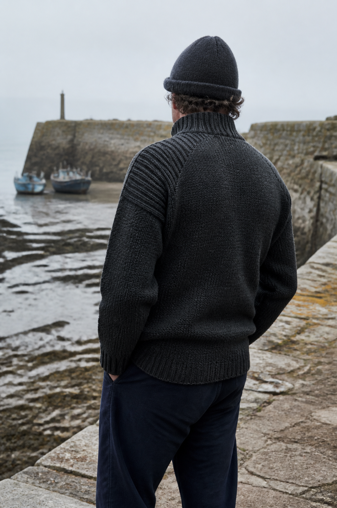

The beginning · 2019
무게에 놀라 멈춰 섰고,
400년의 이유를 보았습니다.
건지울른스를 한국에 소개하는 사람의 이야기

2019년, 일본의 한 편집숍
처음에는
그 무게였습니다.
2019년 일본의 한 편집숍에서 처음 건지 니트를 들었습니다. 예상보다 묵직해서 잠시 놀랐고, 손으로 눌러본 편직은 흔히 보던 니트와 전혀 달랐습니다. 성긴 틈 없이 단단했습니다.
세상에는 니트가 정말 많습니다. 대부분 보온을 이야기하지만, 건지 니트는 거친 바다에서 일하는 어부를 위해 보온과 발수, 내구성, 움직임을 함께 고민한 옷이었습니다. 그 목적이 400년 가까운 시간을 견뎠다는 사실에 끌렸습니다.
가공을 많이 하지 않은 브리티시 울은 물기를 자연스럽게 밀어내고, 고밀도로 짠 조직은 바람을 막아줍니다. 조금 무거울 수 있지만 바로 그 무게가 방한성과 내구성을 만듭니다. 어깨의 물결과 밧줄을 닮은 무늬에는 섬의 생활까지 남아 있습니다.
기능을 위해 태어난 옷이 시간의 검증을 통과해 하나의 아름다움이 된 것. 기능과 미학이 균형을 이루는 그 태도가 제가 서플라이루트를 통해 소개하고 싶은 물건의 기준과 꼭 맞았습니다.
What I will not compromise
타협하지 않는 기준
“더 가볍고 쉽게 팔기 위해,
울과 밀도를 낮추지는 않겠습니다.”
가격이 낮은 제품은 아닙니다. 작은 회사가 아직 잘 알려지지 않은 브랜드를 제품의 힘만으로 설명하는 일도 쉽지 않습니다. 그래도 생산 원가를 낮추기 위해 울의 무게나 편직 밀도를 줄인다면, 제가 처음 이 옷에서 발견한 이유까지 사라진다고 생각합니다.
An island wearing its history
한 사람의 후기가 아니라,
섬 전체의 애정이 남았습니다.
건지섬에서는 할머니가 짠 니트를 손자에게 물려주고, 오래된 한 벌을 가족의 역사처럼 간직합니다. 2025년에는 약 200명의 주민이 저마다의 건지 니트를 입고 한자리에 모였습니다. 한 가족은 1950년대의 니트를 다음 세대에 전했고, 또 다른 주민은 증조할머니가 1928년에 짠 한 벌을 보관하고 있었습니다.
그들에게 건지 니트는 유행하는 옷이 아니라 자신들이 어디에서 왔는지를 보여주는 생활의 유산이었습니다. 제가 한국에서 이어가고 싶은 것도 단지 한 벌의 판매가 아니라, 그 옷에 축적된 사람과 장소의 이야기입니다.
A continuing route
이어온 시간
-
처음 마주한 무게
일본의 한 편집숍에서 건지 니트를 처음 들고, 낯선 밀도와 단단함 앞에 멈춰 섰습니다.
-
그 이후
무게 뒤의 이유를 찾다
건지섬의 바다와 어부, 브리티시 울과 편직 방식에 남은 오랜 쓰임을 공부했습니다.
-
지금
한국으로 잇는 길
쉽게 설명되는 유행보다 오래 남을 이유가 분명한 이 니트를 천천히 소개하고 있습니다.
My promise